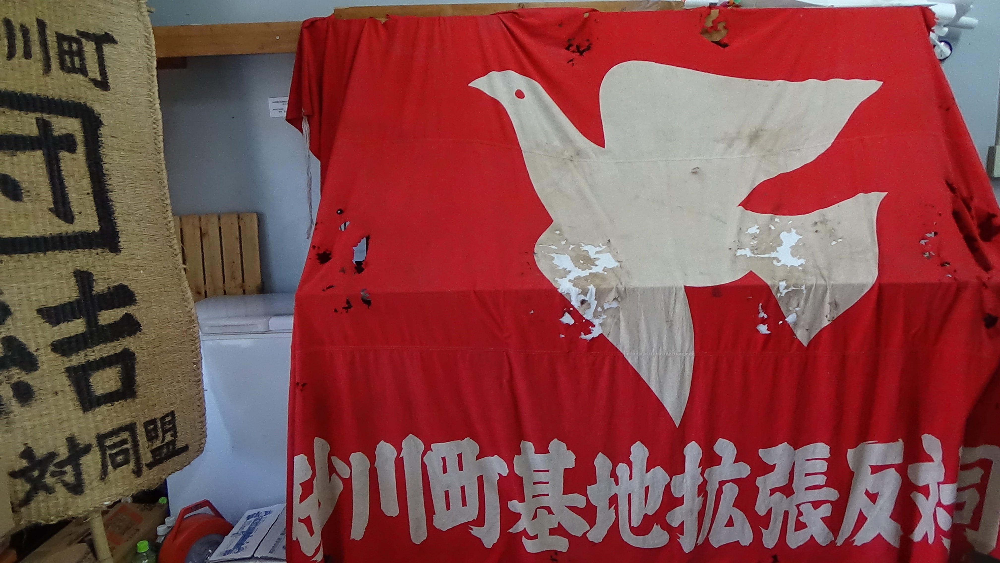

What Happened Thereafter (1)
What Happened Thereafter: Bitter Victory and the Use of Returned Land
Following the first series of historical descriptions about Sunagawa and Sunagawa Toso (struggle) , this article examines (1) the significance of various lawsuits and their consequences, and (2) the land utilization after the Tachikawa base was closed and returned to Japan.
{kind=link}
Re-union of the representative members of the anti-base alliance
in front of the Peace Monument, whichi was constructed in 1975,
commemorating the 25th anniversary of the Sunagawa Toso, and
celebrating its final victory.
Diversified Lawsuits and Their Consequences
Sunagawa Toso is generally remembered as unyielding protests represented by violent clashes between unarmed protestors and increasingly forcible police. The struggle was also highly regarded as a successful post-war mass movement uniting people from various sectors and combining on-site activism with court battles as residents and supporters embraced the spirits of democracy and popular sovereignty clearly stated in the peace-oriented Constitution of Japan.

{kind=link}
But, according to MIYAOKA Masao and the lawyers who were committed to legal procedures for more than 14 years, the court battles were a time-and-energy consuming, depressing process which made them feel isolated and disregarded.
The Procurement Agency in charge of land acquisition for the US base became impatient as the land surveys were often hindered and delayed. So, they approached the land owners individually, offering favorable terms and conditions. Some residents took advantage of this occasion to move away from the existing noise problems of the air base while others were gradually persuaded by the procurement officers and agreed to sell the land. Finally, the number of the families living on the land to be dispossessed was reduced from more than 130 as of May, 1955, down to 23 in the end.
The first and the most essential factor for the land of Sunagawa to be preserved was those 23 households never giving their land up for military purposes. Otherwise, the community of Sunagawa would have been physically divided by an extended runway. The noise problems and other nuisances would also have worsened, risking the life and property of all the residents indiscriminately while the Japanese government, bound by the Japan-US Security Treaty and Administrative Agreement, remained unable to correct the situation.
During the 14 years of the court battles, the lawyers tackled a variety of cases, most closely collaborating with Miyaoka. They included the following cases (to name only a few):
--request to a district court of Tachikawa for an order of provisional disposition to prohibit the land surveyors from stepping onto privately owned land.
--request to preserve evidence as the surveyors destroyed crops on the farmland.
--defense in criminal cases as some protestors/demonstrators were arrested.
--defense in the case of the Governor of Tokyo accusing the Mayor of Sunagawa of negligence as the Mayor did not obey the Governor’s order to notify the public of the base expansion plan.
--demand for the land located inside, and leased to, the existing US base to be returned to the Japanese farmers, who refused to renew the lease agreement.
--administrative litigation filed against the Land Expropriation Committee of Tokyo, raising questions about their qualification and authorization.
The last one of the above listed was the longest and yet the most rewarding. As a matter of fact, the lawyers strategically brought the case to the Land Expropriation Committee of Tokyo, which was to discuss and decide on the expropriation through regular meetings attended by both parties. The lawyers finally adopted “ox walk” tactics, by making slow and long speeches or even just reading paper after paper to prolong the meetings.
It was after MINOBE Ryokichi, a Marxist economist backed by the Socialist and Communist Parties, won the Tokyo Gubernatorial election in 1967 that the meeting's atmosphere changed in favor of Sunagawa. The new governer, who took power from the long lasting conservative administration supported by the ruling Liberal Democratic Party, expressed his reluctance towards the expropriation process. As a result, the regular meetings were suspended.
Apparently frustrated by this unpromising outlook, US officials decided to abandon Tachikawa and the Japanese Government canceled its approval of the expropriation in 1969. Thus, the US Government introduced a new military strategy called the Kanto Plan, which was agreed with the Japanese Government in 1973.
ARAI Akira, who joined the Sunagawa team as a freshman lawyer and worked his way through the whole process, recalls his bitterness when he was told that they had finally won. He had felt so desperate and hopeless for so many years that he was far from embracing the victory. Even after he acknowledged the significance of all that he did for the sake of Sunagawa, he still felt ambivalent because the military base simply moved away from Sunagawa to Yokota where more important base functions integrated to infringe on its citizens’ rights to lead a peaceful and quiet life. Groups of residents in Yokota have been fighting against noise problems for years without much success.

Noise from military flights constantly pervaded the daily lives of residents in Sunagawa.